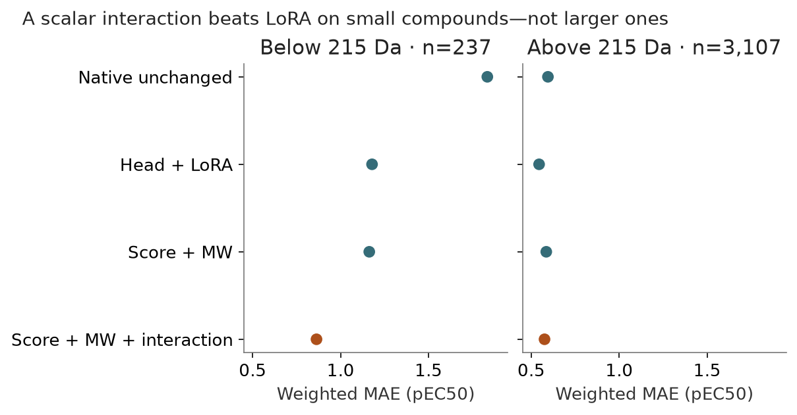

Can simple molecular-weight controls explain the correction?
Status: completed · Synthesis updated 2026-09-08. Original dates and immutable protocol history remain in the source evidence.
Question
Is the low-MW correction uniquely neural?

PNG · SVG · Plotted data · Figure provenance
{kind=link}
{kind=link}
Design and fitted/frozen flow
Frozen native scalar + continuous MW → FIT-only weighted linear scaling: score only, MW only, additive score+MW, or score+MW+interaction. CAL is reserved for intervals; no threshold-based rule.
Results
All 40 fits completed. For 237 compounds below 215 Da at N500, weighted MAE: native 1.834; LoRA 1.179; additive score+MW 1.163; interaction 0.863.
Implication and limits
The interaction is four coefficients, not MW alone. A conspicuous subgroup correction is not proof that MW explains all aggregate gains, binding, or activation biology.
All evidence is retrospective. Historical budgets, splits and raw versus uncertainty-weighted scores must remain distinct.
Source evidence
Original reports and exact tables (historical report links may refer to unbundled files).
{kind=link}
{kind=link}